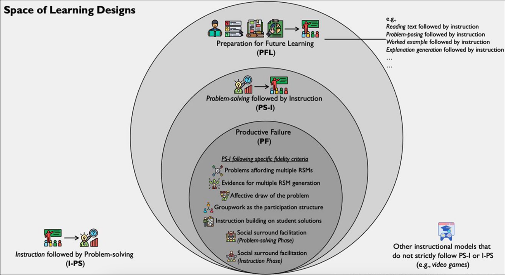

![]()
gantt
title Ablauf
dateFormat YYYY-MM-DD
section Vorbereitung
section Doktorarbeit
Exposé: e0, 2023-01-08, 240d
Promotionsvereinbarung: pv, 2023-07-01, 30d
Zulassung durch den Promotionsausschuss: zp, 2023-10-05, 5d
Probedurchlauf: pdl, 2024-04-01,14d
Experiment 1 : e1, 2024-05-01, 60d
Experiment 2 : e2, 2025-02-01, 120d
Experiment 3: e3, 2025-08-01, 110d
1. Artikel : art1, 2025-05-01, 365d
2. Artikel : art2, 2026-02-01, 365d
3. Artikel : art3, 2027-02-01, 365d
🎉🍾: cha, 2028-03-01,1d
Dissertationsförderung: diss, 2025-08-01, 365d
section Projekt
Antrag Anschubfinanzierung: a0, 2023-02-01, 30d
Anschubfinanzierung: a1, 2024-08-01, 365d
Antrag Projekt: p0, 2025-01-01, 60d
Projekt: p1, 2026-08-01, 1100d
section Innovationspool
Antrag Innovationspool: i0, 2023-02-01, 30d
Innovationspoolprojekt: i1, 2024-08-01, 365d
Treffpunkt Hochschuldidaktik: i2, 2024-03-01, 5d
Poster: i3, 2025-08-01, 5d
How to flip the right way? Fail, flip, fix and feed in practice.
Kolloquium Fachdidaktik
Promotionsprojekt
Umriss
Fakultät für Natur- und Gesellschaftswissenschaften
Mitgliedschaft: Graduate School PH Heidelberg
Kumulative Promotion, 3 Artikel
Betreuer: Prof. Dr. Christian Spannagel

Geplanter Ablauf
Productive failure
Einordnung: Productive failure
Einordnung

Design
- 2 Phasen:
- Phase 1: generation and exploration phase
- Phase 2: consolidation phase
Kapur & Bielaczyc (2012)
Typischer Unterrichtsinhalt:
- Standardabweichung, bzw. Varianz
Erhobene Variablen
- math ability
- prior knowledge
- number of solutions
- mental effort
- engagement
- procedural knowledge
- conceptual understanding
- transfer
vgl. Kapur (2015)
Effekte individuell
conceptual knowledge: \(p<0.001\), \(\eta^2=0.26\)
Hartmann et al. (2020)
conceptual understanding: \(p<0.001\), \(d = 2.00\)
transfer \(p<0.001\), \(d=1.52\)
Kapur (2014)
transfer \(p < 0.005\), \(d = 0.67\)
Kapur (2015)
| Effektstärken | klein | mittel | gross |
|---|---|---|---|
| Cohens \(d\) | 0.2 | 0.5 | 0.8 |
| Hedges \(g\) | 0.05 | 0.15 | 0.25 |
| \(\eta^2\) | 0.01 | 0.06 | 0.14 |
(vgl. Cohen, 1992)
Collaboration
Unterschied kollaborativ - individuell
Primar (quasi-experimentell): \(p=0.28\), \(\eta^2_p=0.005\)
Mazziotti et al. (2019), p.2
Sekundarklassen (quasi-experimentell): \(p = 0.437\)
Brand et al. (2023)
Boundary conditions?
there is evidence that element interactivity provides an explanatory variable for the presence or absence of a problem-solving first advantage.
Ashman et al. (2020), p.242f
the beneficial effect […] only comes to bear if the teacher compares typical student solutions and contrasts them to the canonical solution during instruction
Loibl & Rummel (2014), p.84
Flipped Classroom
Flipped Classroom - a brief history
Definition flipped class
The traditional definition of a flipped class is:
- Where videos take the place of direct instruction
- This then allows students to get individual time in class to work with their teacher on key learning activities.
- It is called the flipped class because what used to be classwork (the “lecture” is done at home via teacher-created videos and what used to be homework (assigned problems) is now done in class.
Bergmann et al. (2011)
Definition flipped classroom
set of pedagogical approaches that:
move most information-transmission teaching out of class
use class time for learning activities that are active and social and
require students to complete pre- and/or post-class activities to fully benefit from in-class work.
Abeysekera & Dawson (2015)
Definition flipped learning
2 Phasen
- getting students to learn basic content online and prior to class.
- make use of the freed-up in-class time to clarify students’ understandings of the concept and design learning strategies that will enable students to engage deeply with the targeted concept.
Kapur et al. (2022)
Effekte - Flipped Classroom
- 46 meta-analyses, 173 studies
- Von \(d=0.25\) bis \(d=2.29\) in meta-analysis.
- Asian: \(g=0.75\), Western: \(g=0.53\)
- Math: \(g=0.26\)
presence of publication bias on effect size level
There need to be at least 6,424 unpublished studies with a mean of 0; however, to overturn the claim that flipped learning has a positive impact on student learning.
Kapur et al. (2022)
Key findings
- quality of implementation […] not consistent
- greatest impact […] in-class included a lecture
- effects on learning […] due to active learning
- problem-solving prior to a lecture […] can be effective
Kapur et al. (2022)
4F-Modell
Fail, flip, fix and Feed
4F-Modell
- Fail - diagnose, check, and understand what was and was not understood
- Flip - pre-exposure to the ideas in the upcoming class (as simple as providing a video of the class)
- Fix - misconceptions are explored and opportunity to re-engage in learning the ideas
- Feed - feedback to the students and instructor
Kapur et al. (2022)
synchron
asynchron
Leitfrage:
Is the 4F-model flipped the right way?
Alternative Model
- Fail
- Instruct
- Fix
- Feed
synchron
asynchron
Untersuchungs-design
Eine Woche vor dem ersten Tag der Untersuchung
| Min. | Gruppe 1 | Gruppe 2 |
|---|---|---|
| 20 | Pretest | Pretest |
Es findet eine zufällige Zuteilung der Klasse in zwei Gruppen statt.
Erster Tag der Untersuchung
Klasse wird in 2 Gruppen räumlich getrennt.
| Min. | Gruppe 1 (4F) | Gruppe 2 (Alt) |
|---|---|---|
| 40 | Fail koll. | Fail ind. |
| 5 | Mental effort | Mental effort |
| 20 | Flip | Instruct |
| 5 | mental effort | mental effort |
| 20 | Posttest | Posttest |
synchron
asynchron
Zweiter Tag der Untersuchung
Klasse wird zusammen unterrichtet.
| Min. | Gruppe 1 (4F) | Gruppe 2 (Alt) |
|---|---|---|
| 20 | Fix | Fix |
| 5 | mental effort | mental effort |
| 40 | Feed | Feed |
| 5 | mental effort | mental effort |
| 20 | Posttest | Posttest |
Forschungsfragen und Hypothesen
- Students in the 4F-model score higher in engagement than the non-flipped model.
- Students in the 4F-model score higher on (a) procedural fluency and (b) concept knowledge than the alternative model.
Weitere 4-Phasen-Modelle
Padua-Modell
4-Funktionen im Lernzyklus
- Problemlösendes Aufbauen
- Durcharbeiten
- Üben und Wiederholen
- Anwenden
Aebli (1983) ?
LUKAS-Modell
- Konfrontationsaufgaben
- Erarbeitungsaufgaben
- Vertiefungs- und Übungsaufgaben
- Transfer- und Syntheseaufgaben
Luthiger et al. (2018)
AVIVA-Modell
5-Phasen
- Ankommen und einstimmen
- Vorwissen aktivien
- Informieren
- Verarbeiten
- Auswerten
Städeli & Maurer (2020)
Fragen
Fragen
Meinerseits:
- Ist es sinnvoll Padua, Lukas, usw. mitzuerwähnen?
- Wieviel Theorie braucht ein Paper?
- Anregungen zu zukünftigen Designs.
Eurerseits?
Bibliographie
Abeysekera, L., & Dawson, P. (2015). Motivation and cognitive load in the flipped classroom: definition, rationale and a call for research. Higher Education Research & Development, 34(1), 1–14. https://doi.org/10.1080/07294360.2014.934336
Aebli, H. (1983). Zwölf Grundformen des Lehrens: eine allgemeine Didaktik auf psychologischer Grundlage: Medien und Inhalte didaktischer Kommunikation, der Lernzyklus (15. Auflage). Klett-Cotta.
Ashman, G., Kalyuga, S., & Sweller, J. (2020). Problem-solving or Explicit Instruction: Which Should Go First When Element Interactivity Is High? Educational Psychology Review, 32(1), 229–247. https://doi.org/10.1007/s10648-019-09500-5
Baker, J. W. (2000). The „Classroom Flip“: Using web course management tools to become the guide by the side. 9–17.
Bergmann, J., Overmyer, J., & Wilie, B. (2011, Juni 21). The Flipped Class: Myths vs. Reality - THE DAILY RIFF - Be Smarter. About Education. http://web.archive.org/web/20160305005240/http://www.thedailyriff.com/articles/the-flipped-class-conversation-689.php
Brand, C., Hartmann, C., Loibl, K., & Rummel, N. (2023). Do students learn more from failing alone or in groups? Insights into the effects of collaborative versus individual problem solving in productive failure. Instructional Science, 51(6), 953–976. https://doi.org/10.1007/s11251-023-09619-7
Cohen, J. (1992). A power primer. Psychological Bulletin, 112(1), 155–159. https://doi.org/10.1037//0033-2909.112.1.155
Hartmann, C., Gog, T. van, & Rummel, N. (2020). Do examples of failure effectively prepare students for learning from subsequent instruction? Applied Cognitive Psychology, 34(4), 879–889. https://doi.org/10.1002/acp.3651
Hartmann, C., Gog, T. van, & Rummel, N. (2022). Productive versus vicarious failure: Do students need to fail themselves in order to learn? Applied Cognitive Psychology, 36(6), 1219–1233. https://doi.org/10.1002/acp.4004
Kapur, M. (2008). Productive Failure. Cognition and Instruction, 26(3), 379–424. https://doi.org/10.1080/07370000802212669
Kapur, M. (2014). Productive Failure in Learning Math. Cognitive Science, 38(5), 1008–1022. https://doi.org/10.1111/cogs.12107
Kapur, M. (2015). The preparatory effects of problem solving versus problem posing on learning from instruction. Learning and Instruction, 39, 23–31. https://doi.org/10.1016/j.learninstruc.2015.05.004
Kapur, M., & Bielaczyc, K. (2012). Designing for Productive Failure. Journal of the Learning Sciences, 21(1), 45–83. https://doi.org/10.1080/10508406.2011.591717
Kapur, M., Hattie, J., Grossman, I., & Sinha, T. (2022). Fail, flip, fix, and feed – Rethinking flipped learning: A review of meta-analyses and a subsequent meta-analysis. Frontiers in Education, 7, 956416. https://doi.org/10.3389/feduc.2022.956416
Lage, M. J., Platt, G. J., & Treglia, M. (2000). Inverting the Classroom: A Gateway to Creating an Inclusive Learning Environment. The Journal of Economic Education, 31(1), 30–43. https://doi.org/10.1080/00220480009596759
Lo, C. K., Hew, K. F., & Chen, G. (2017). Toward a set of design principles for mathematics flipped classrooms: A synthesis of research in mathematics education. Educational Research Review, 22, 50–73. https://doi.org/10.1016/j.edurev.2017.08.002
Loibl, K., & Rummel, N. (2014). Knowing what you don’t know makes failure productive. Learning and Instruction, 34, 74–85. https://doi.org/10.1016/j.learninstruc.2014.08.004
Luthiger, H., Wilhelm, M., Wespi, C., & Wildhirt, S. (Hrsg.). (2018). Kompetenzförderung mit Aufgabensets: Theorie - Konzept - Praxis (1. Auflage). hep, der bildungsverlag.
Mazziotti, C., Rummel, N., Deiglmayr, A., & Loibl, K. (2019). Probing boundary conditions of Productive Failure and analyzing the role of young students’ collaboration. Npj Science of Learning, 4(1), 1–9. https://doi.org/10.1038/s41539-019-0041-5
Nachtigall, V., Serova, K., & Rummel, N. (2020). When failure fails to be productive: probing the effectiveness of productive failure for learning beyond STEM domains. Instructional Science, 48(6), 651–697. https://doi.org/10.1007/s11251-020-09525-2
Sinha, T., & Kapur, M. (2021). When Problem Solving Followed by Instruction Works: Evidence for Productive Failure. Review of Educational Research, 91(5), 761–798. https://doi.org/10.3102/00346543211019105
Städeli, C., & Maurer, M. (2020). The AVIVA model A competence-oriented approach to teaching and learning. https://www.hep-verlag.ch/the-aviva-model
Tucker, B. (2012). The flipped classroom. Education next, 1, 82–83. https://www.msuedtechsandbox.com/MAETELy2-2015/wp-content/uploads/2015/07/the_flipped_classroom_article_2.pdf
Wiederverwendung
Zitat
Bitte zitieren Sie diese Arbeit als:
Conrardy, R., & Conrardy, R. (2024, March 4). How to flip the
right way? Fail, flip, fix and feed in practice. University of
Teacher Education Bern. https://phbern-rconrardy.github.io/lerngelegenheiten/